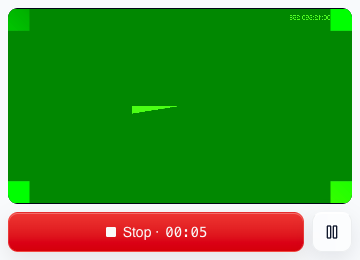
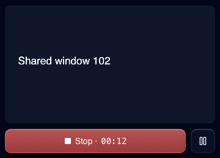
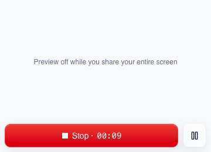

Recorder pop-out: what the web app can do, and what needs an extension or a desktop app
Researched 5 October 2026 against Chrome stable (about version 154). Sources are listed at the end.
Ship the pop-out in the web app now. It covers the main need, which is seeing the recording and your face while you work in another tab or app. A Chrome extension adds little for this problem. Only a desktop app can keep its own controls and camera bubble out of a whole-screen recording, so that is the reason to build one later.
What the web pop-out looks like
These are screenshots from real Chrome, recording with a fake camera and a fake screen share. The pop-out is 360 by 260 pixels and shows exactly the frames being recorded, with the same Stop and Pause buttons as the page.



What each option can do
| Capability | Web app in Chrome | Chrome extension | Desktop app |
|---|---|---|---|
| Floating preview while you use another tab | Yes. Document Picture-in-Picture. Chrome opens it automatically when you switch tabs during a recording, because the recorder already uses the camera and mic. | Yes. Same API, or a bubble injected into each tab. | Yes. |
| Floating preview while you use another app | Yes, after one click. The window stays on top of every app, but Chrome only auto-opens it on a tab switch. Before switching apps you press Pop out. | Same as the web app. An injected bubble only exists inside Chrome tabs. | Yes, always. |
| Keep our own window out of a whole-screen recording | No. Anything on screen is recorded, including the pop-out. A W3C proposal to exclude it (issue 330) is open and not shipped. The pop-out hides its preview in this case, so the recording does not show a screen inside a screen. | No. The extension capture API cannot exclude windows. | Yes. ScreenCaptureKit filters on macOS, WDA_EXCLUDEFROMCAPTURE on Windows. |
| Loom-style camera bubble in screen recordings | Possible. The pop-out could become the bubble, with the camera left out of the composited frame. It only reaches the video when you share the whole screen. | Inside Chrome tabs only. Loom's own extension does not show its bubble over other apps. | Yes, over any app. |
| Recording survives closing the Clarity tab | No. Closing the tab closes the pop-out and ends the recording. | Yes. An offscreen document keeps recording without any Clarity tab. | Yes. |
| System audio | Partly. Tab audio everywhere. Screen and window audio on macOS from Chrome 141 with macOS 14.2 or later. The browser treats the request as a hint. | Same as the web app. | Yes, from any app. |
| Keyboard shortcut to stop or pause from anywhere | Inside the pop-out only. | Up to four, and global ones are limited to Ctrl+Shift+0 to 9. | Any global hotkey. |
| Click highlighting and cursor zoom | No. A web page cannot see the cursor outside its own tab. | Inside Chrome tabs only. | Yes. |
| What the customer has to do | Nothing. Chrome asks once whether the site may open the pop-out automatically. | Install from the Chrome Web Store and accept permission warnings. Store review takes days to weeks, and any new permission warning disables the extension until the user accepts it again. | Download, install, and grant macOS screen-recording permission. We would also own code signing and auto-update. |
| Cost to build | Small. This PR. | Medium. A separate codebase that is built, reviewed, and released on its own track. | Large. A native capture pipeline per OS, signing, updates, and support. |
Recommendation
- Now. Ship the web pop-out. It shows exactly what is being recorded, with the timer, Pause, and Stop. A Pop out button opens it before you switch apps. Chrome can also open it by itself when you switch tabs; that path only runs on https, so it gets checked on the PR preview. When you share the whole screen it shows only the controls, and it does not open by itself, so a tab switch never drops a control bar into the recording.
- Next, still in the web app. Set the screen-share options the recorder passes to Chrome today with defaults only: hide the Clarity tab from the picker, allow switching the shared tab, ask for system audio, and choose whether Chrome jumps to the shared tab after the picker. Then measure the frame rate of the recording with the Clarity tab hidden, with and without the pop-out open.
- Your call. For whole-screen recordings, the pop-out could become a Loom-style camera bubble, with the camera taken out of the composited frame. You would get your face in the recording from a bubble you can drag around. The cost is a second compositing path for one case.
- Skip the extension unless recording after the Clarity tab closes, or one-click tab capture without the picker, becomes a customer need. It does not solve the whole-screen problem.
- Build a desktop app when clean whole-screen recordings, system audio from any app, global hotkeys, or click highlighting matter to customers. That is the line where Loom also needs its desktop app.
Sources
- Chrome: Document Picture-in-Picture
- Chrome: automatic picture-in-picture for web apps
- W3C mediacapture-screen-share issue 330: exclude PiP windows from capture
- Chrome: screen sharing controls
- Chrome: conditional focus
- addpipe: system audio capture on Chrome for macOS
- Chrome: timer throttling
- Chrome extensions: desktopCapture
- Chrome extensions: offscreen documents
- Chrome extensions: commands
- Chrome Web Store review process
- Loom: recording platforms
- Apple WWDC22: ScreenCaptureKit
- Microsoft: SetWindowDisplayAffinity
- Electron: BrowserWindow